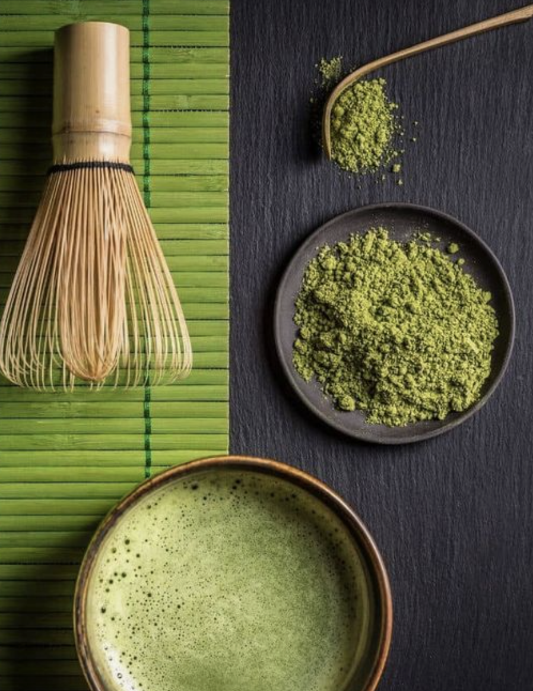

Strawberry Matcha Cheescake
Ingredients
Matcha Spongecake
- 6 large egg whites
- ¼ teaspoon cream of tartar
- 6 large egg yolks
- 100 g milk, dairy or non-dairy
- 50 g flavourless oil
- 1 teaspoon vanilla extract
- 120 g cake flour
- 2 tablespoons matcha powder, culinary grade
- 8 fresh strawberries, diced, plus whole strawberries for decoration if desired
Matcha Buttercream
- 430 g unsalted butter, room temperature
- 185 g powdered sugar
- 1 tablespoon matcha powder, culinary grade
- 1 teaspoon vanilla extract
Instructions
Matcha Spongecake
- Preheat oven to 375°F and line three 6” cake pans with a round of parchment paper. Set aside.
- In a large bowl, use a hand mixer or stand mixer to beat the egg whites until it becomes foamy. Add in the cream of tartar and continue beating until it becomes frothy soft peaks.
- Sprinkle the sugar into the egg whites one spoonful at a time, mixing in between each addition, until it becomes stiff peaks. Set aside.
- In a separate large bowl, stir together the egg yolks, milk, oil, and vanilla extract. Sift in the cake flour and matcha powder. Stir together with a spatula until combined.
- Add the egg white meringue into the egg yolk mixture in 3 additions, folding the batter together in an upwards motion in between each addition. Fold the batter until no streaks remain and batter is fluffy and airy.
- Divide the cake batter evenly into your 3 lined cake pans.
- Bake cakes for 18-20 minutes or until a toothpick inserted in the middle comes out clean. Let cakes cool in the pans for about 15 minutes before running a knife around the edges of the pan and inverting the pan to release the cakes. Let cool completely before using.
Matcha Buttercream
- In a stand mixer fitted with a paddle attachment, beat softened butter on medium-high speed for 10 minutes until it becomes very creamy and pale in colour.
- Add in the powdered sugar, matcha powder, and vanilla extract. Mix on low speed, working your up to medium-high speed for another 10 minutes.
Assembling the Cake
- On a cake turntable, lay down your first cake layer. Use an offset spatula to smooth an even layer of buttercream or whipped cream on top.
- Top the frosting with a layer of diced strawberries, lightly pressing them down into the frosting so that they stay in place.
- Place another cake layer on top and repeat with the next layer of frosting and strawberries.
- Frost the top and outside of the whole cake with a crumb coat. Chill in the fridge for about 30 minutes before frosting with the final layer of frosting.
- Decorate the top with buttercream lettering and more strawberries, if desired.

Recipe Sites
Non-Recipe Sites
- https://canals-amsterdam.nl/ I like this site since it has parallax interactive scrolling, which I think make the recipe more interesting as you read it.
- https://medusaoffspace.com/ This site uses moving type to suggest visual movement. I think that it's a cool element that draws your eye to the text. Maybe making it the title of the recipe.
- https://www.squadeasy.com/en/ I really enjoy when you hover over things on sites and something happens. Here the dog follows your cursor and also a white circle appears when you hover over him. I think this is fun and playful.